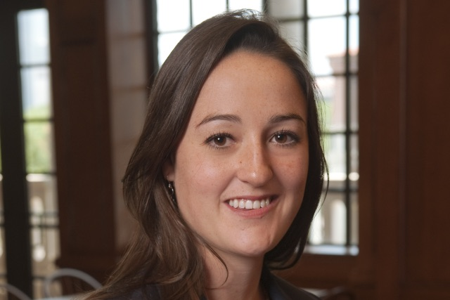

Podcast Episode 3: Meet Allison Lami Sawyer
December 17, 2016

When Allison speaks, you quickly figure out that 1) she doesn't hold back and 2) she doesn't take shit from anyone.
So it came as no surprise to us as we interviewed Allison that she has forged her own unique path including:
- growing up a self-described "nerdy girl" in Alabama
- studying physics in the UK
- getting an MBA at Rice University
- creating an internship for herself at the Houston Technology Center (HTC)
- co-founding Rebellion Photonics
- raising more than $10M in funding
- winning awards such as "Wall Street Journal Startup of the Year"
- growing the company into a global enterprise, with all of the majors as customers
And Allison does all of this while spending time mentoring other female entrepreneurs. As one example of this, Allison helped start SheHacksHTX and hosted the event for female entrepreneurs at Rebellion Photonics.
At the end of the interview, she highlights some up-and-coming entrepreneurial stars including:
- Kathleen Perley, Decode Digital: web marketing agency for large hospitals
- Lauren Miller, Rust Patrol, rust prevention technology/product
- Siv Hilde Houmb (PhD), Secure NOK, cyber security for rigs.
← back to the Loop Houston front page